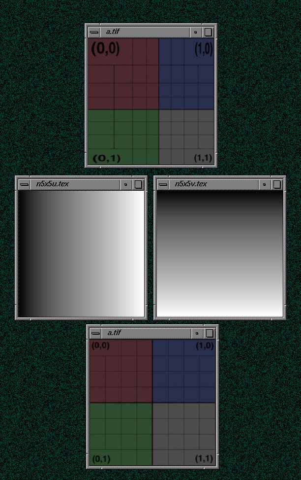
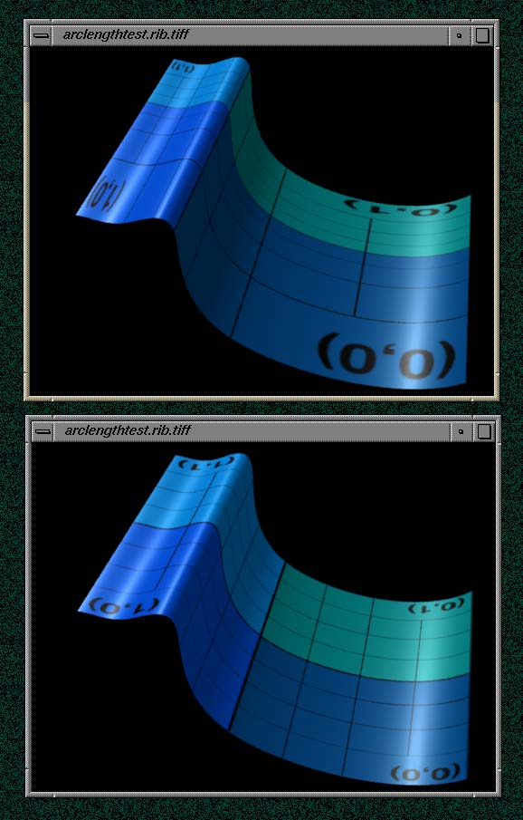
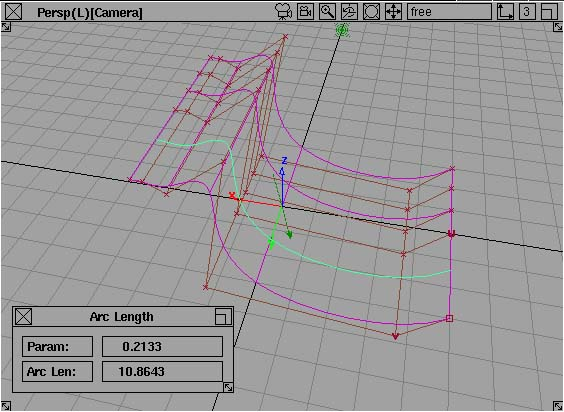

Creates a TIFF file containing approximated arc lengths of a NuPatch surface. The values are IEEE floats from 0 to 1 representing arc lengths from 0 to maximum found length.
I'll include this tool in a later release for those folks who might find it interesting.
nulen -x xres -y yres [-u tiff_file] [-v tiff_file]
[-n nupatch_name|-g shadinggroup]
[rib_file . . .]
[-u tiff_file] Output TIFF file name to contain arc lengths
of isoparms going in the u direction.
[-v tiff_file] Output TIFF file name to contain arc lengths
of isoparms going in the v direction.
[-n name Use first Nupatch surface in named using an
Attribute statement of the following form:
Attribute "identity" "name" [name]
If no name is given the first NuPatch statment
is used.
|-g shadinggroup] Use first Nupatch surface in shading group defined
with an Attribute statement of the following form:
Attribute "identity" "shadinggroup" [shadinggroup]
If no name is given the first NuPatch statment
is used.
[rib_file . . .] If no file names are given then nulen will
use standard input.
The arc lengths of a NURB surface can be calculated and stored into an IEEE TIFF image using nulen. The following shows a simple NURB surface that when rendered with a texture map shows the speed both in the u and v direction accelerating and decelerating across the surface.
Shown below are four TIFF images rendered from the rib file n5x5.rib. The first image shows the n5x5.rib rendered with the standard paintedplastic.sl shader. The two following TIFF images were calculated with nulen and show the arclength parametrization going across the n5x5.rib surface. The left image goes from 0 to 1 in the u direction and second image from 0 to 1 in the v direction.
Note that in the example below the sizes of the arclength texmaps were set to the size 256x256. Because of this example's geometry the left image could really be 2 pels high and 256 pels wide. The right image could be 256 pels high and 2 pels wide. Atleast 2 rows or columns are needed for txmake.

By adding the following code to the n5x5.rib file, the two arclength texmaps and the shader tebALPaintedPlastic.sl create a uniform speed of the texture coordinates across the NURB surface:
Surface "tebALPaintedPlastic" "texturename" "grid2.tex"
"uarclengthmap" ["n5x5u.tex"]
"varclengthmap" ["n5x5v.tex"]
The following is a more three dimensional example. In the top image the texture coordinate u travels across the surface from left to right. Its speed slows down where there are more isoparams and then suddenly speeds back up when there is more distance between isoparams. In the bottom image an arclength texmap and tebALPaintedPlastic was used to compensates for the varying speeds of u.

When using nulen to output true arclengths and using normfptiff to find the max and minimum the following output is printed that shows the maximum arc length
%normfptiff -v arclengthtestU arclengthtestU.tif
min found: 0
max found: 10.8643
min: 0
max: 10.8643
The above value 10.8643 happens to match Alias's arc length shown in the following figure.

In the above example the values nulen calculated match exactly with Alias's calculated arc lengths. :-)